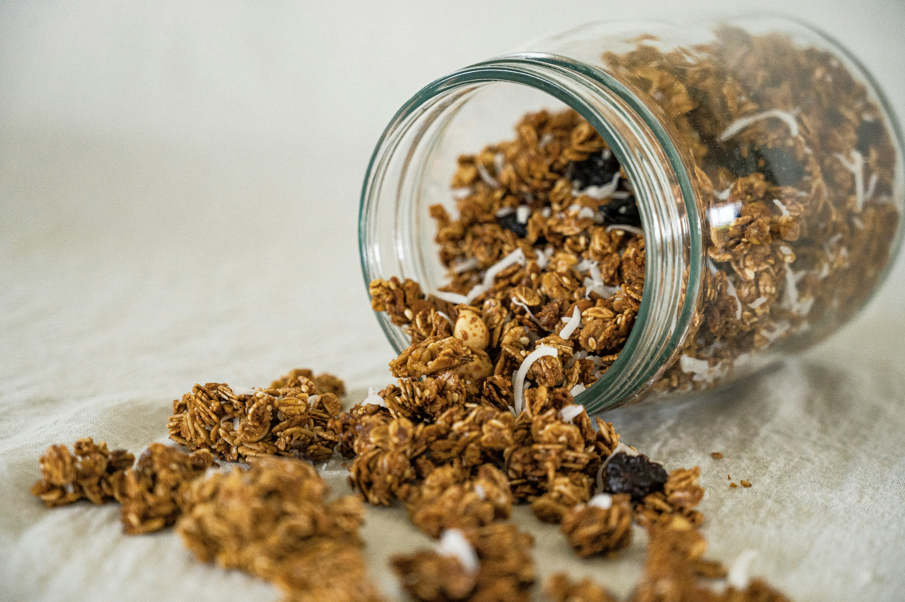

Chocolate Chip Granola Recipe

I love waking up to some fresh baked granola
in the morning, especially with chocolate chips.
Here's How:
What's required
- 2 cups old-fashioned rolled oats
- 1.5 cups sliced almonds
- 3 tbsp melted coconut oil
- 1 quarter cup pure maple syrup
- 2 tbsp honey, get the good stuff
- 1.5 tsp vanilla extract
- 1 quarter tsp sea salt
- About a half cup of your favorite chocolate chips
Instructions
- Preheat oven to 300 degrees.
- Prep a baking sheet by lining with parchment paper.
- Mix rolled oats and almonds in a large bowl.
- Whisk together oil, maple syrup, honey, vanilla, and salt.
- Pour oil mixture onto oats, stirring until everything is coated evenly.
- Spread mixture flat and evenly on parchment lined baking sheet.
- Bake for 20 minutes, rotate pan 180 degrees,
and bake another 10 to 15 minutes until granola is golden brown.
- Remove from oven and let cool a few minutes, then stir in chocolate chips.
- Let cool completely without stirring. Break into pieces and store in an airtight
container, and Viola!
Home